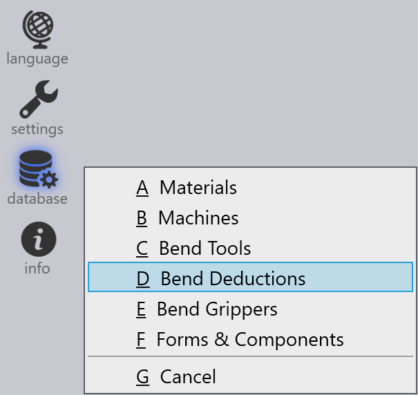

Deducciones de plegado
Las deducciones de plegado se utilizan para calcular la longitud desarrollada[1] de una pieza de chapa metálica. Es necesario para producir con precisión piezas con las dimensiones correctas después del plegado.
Las deducciones de plegado toman en cuenta el estiramiento y la compresión del material que ocurre durante el proceso de plegado. Al usar deducciones de plegado, TecZone Bend puede ajustar la longitud del patrón plano para garantizar que la pieza plegada final cumpla con las dimensiones especificadas.
Las deducciones de plegado pueden variar según factores como el tipo de material, el espesor, el radio de plegado y el método de plegado.
Cuando se importa una pieza 3D en TecZone Bend, el software calcula automáticamente las deducciones de plegado según la geometría de la pieza y las propiedades del material. También puede ajustar manualmente las deducciones de plegado si es necesario para afinar la longitud del patrón plano.
Configuración de deducciones de plegado
Las deducciones de plegado personalizadas se pueden establecer en la base de datos de Deducciones de plegado. Para acceder, haga clic en el icono database y seleccione Bend Deductions.

Puede Add un nuevo escenario de deducción de plegado o seleccionar un escenario existente para Edit o Delete. También puede Copy un escenario existente para crear uno nuevo con configuraciones similares.

Haga clic en Add para crear un nuevo escenario de deducción de plegado. Seleccione e ingrese los siguientes parámetros:
-
Material: Seleccione el material para el cual se aplican las deducciones de plegado.
-
Thickness: Establezca el espesor de la chapa para el cual se aplican las deducciones de plegado.
-
Punch radius: Establezca el radio de la herramienta superior para el cual se aplican las deducciones de plegado.
-
V-width type: Elija el tipo de medición de ancho V utilizada.
-
Die V-width: Establezca el ancho de la herramienta inferior para el cual se aplican las deducciones de plegado.
-
Die radius: Establezca el radio de la herramienta inferior para el cual se aplican las deducciones de plegado.
-
Die angle: Establezca el ángulo de la herramienta inferior para el cual se aplican las deducciones de plegado.
Haga clic en OK para guardar el nuevo escenario.
Además de esto, seleccione un escenario de deducción de plegado y haga clic en la opción … para ver más opciones:

-
Graph: Muestra un gráfico que muestra la relación entre el ángulo de plegado y la deducción de plegado. Esta representación visual ayuda a entender cómo cambian las deducciones de plegado con diferentes ángulos de plegado. Mueva el cursor sobre las líneas blue y red del gráfico para ver valores específicos.

-
Import: Le permite importar datos de deducción de plegado desde un archivo CSV externo.
-
Export: Le permite exportar los datos actuales de deducción de plegado a un archivo CSV para fines de respaldo o intercambio.
-
3rd party: Proporciona opciones para importar datos de deducción de plegado de software o fuentes de terceros.
Tipos de deducciones de plegado
TecZone Bend admite tres tipos de deducciones de plegado: Air Bending, Folding y Coining.
Cada tipo tiene su propio conjunto de parámetros y cálculos para determinar con precisión las deducciones de plegado según el método de plegado utilizado.
Air Bending
El plegado al aire es un método de plegado común donde la chapa metálica se pliega usando un punzón y matriz sin cerrar completamente la matriz. Este método permite más flexibilidad y es adecuado para una amplia gama de materiales y espesores.
Para agregar deducciones de plegado para plegado al aire, seleccione un escenario adecuado de la base de datos de Deducciones de plegado. Haga clic en Add para crear un nuevo escenario de deducción de plegado al aire e ingrese el Bend Angle.

A medida que ingresa el ángulo de plegado, los valores correspondientes de Deduction (Edge), Deduction (Tangent) y ui:962[Inner Radius] se calcularán y mostrarán.
Haga clic en OK para guardar la nueva deducción de plegado al aire.
Folding
El plegado o Hemming es un método de plegado donde la chapa metálica se pliega usando un punzón y matriz que se cierra completamente, creando un pliegue agudo. Este método se usa a menudo para materiales más delgados y requiere un control preciso de las deducciones de plegado.

Para agregar deducciones de plegado para plegado, seleccione un escenario adecuado de la base de datos de Deducciones de plegado. Haga clic en Add para crear un nuevo escenario de deducción de plegado y seleccione el Hemming method.
Haga clic en OK para guardar la nueva deducción de plegado.
Coining
El acuñado es un método de plegado donde la chapa metálica se presiona entre un punzón y matriz con alta presión, resultando en un pliegue preciso y agudo. Este método se utiliza típicamente para materiales más gruesos y requiere deducciones de plegado precisas.

Para agregar deducciones de plegado para acuñado, seleccione un escenario adecuado de la base de datos de Deducciones de plegado. Haga clic en Add para crear un nuevo escenario de deducción de acuñado.
Haga clic en OK para guardar la nueva deducción de acuñado.